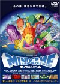

|
■2005/05/10/(Tue)21:17
|

ずーっと放置してあった「マインドゲーム」を観ましたー。
ジャズ的であったり、ラップ調であったり、クラシックや演歌調な映像表現や、トリップ感は、さーすがハウルやスチームボーイを差し置き文化庁メディア芸術祭大賞受賞しただけあるなーとゆー満足感（しっかし、世間一般の大本命を外すとは審査委員も無茶してるなー…）。んが、人生訓や死生観を少々語りすぎな気がするのは私だけかしらん？（いやこれは大阪弁だから気になったのかも）
まー結構心地よい映画ですよー。
これまた好みが分かれそうな作品ですが…
そーそー。ヒロイン「みょんちゃん」のおっぱい加減と、エロの塩加減が丁度よかったなー。
|
| |